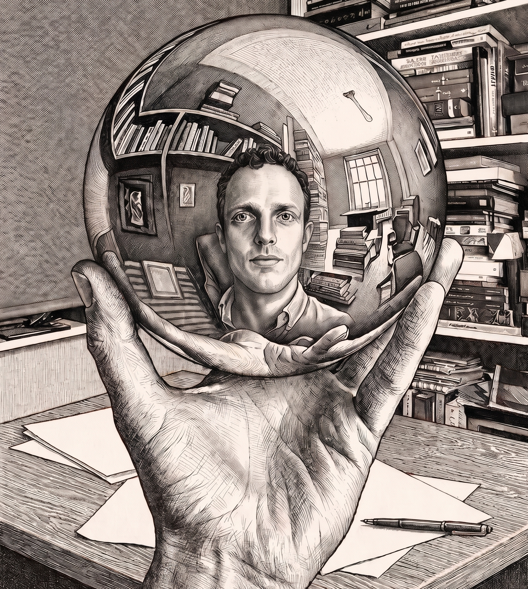

AI Engineer specializing in transformer architectures, world models, graph-based solutions, and reinforcement learning.
Quantum Computing enthousiast.
The portrait is a reindition of "Hand with Reflecting Sphere" by one my favourite artists, Escher.